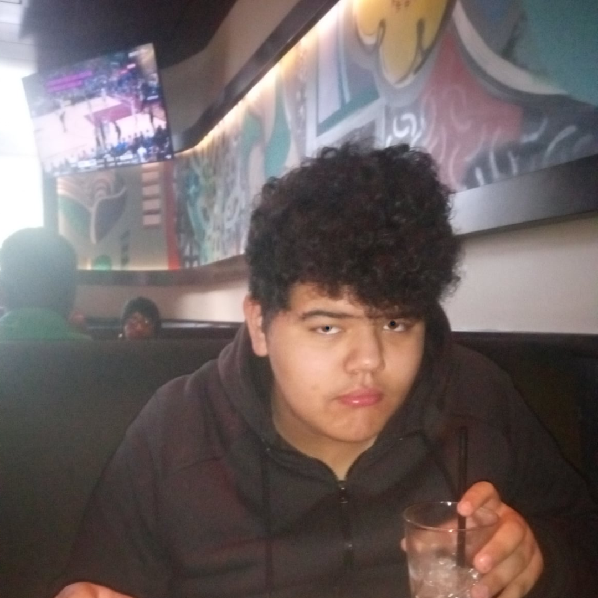

State of the Tune, is a producer from and based in Kansas. State of the Tune is a great project of loops,
samples and hard hitting percussions packaged into albums of instrumental beats. State of the Tune began producing late 2020 and began uploading early 2024.
Youtube

The Expedition is an American rapper from and based in
Kansas. He began rapping after a Social Studies teacher assigned him a rapping project, to which he wrote a rap
about Lewis and Clark's expedition to MF DOOM's One Beer instrumental. His earlier work was nearly made entirely of free beats
found on YouTube or made by samples he discovered through MF DOOM's work, one of his biggest sources of
inspiration. The Expedition appeared on the rap scene late 2023.
Youtube, Spotify, Apple Music